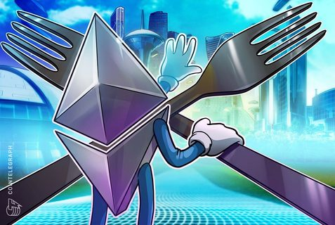

Cointelegraph
Trump’s SEC nominee Johnson backs formal rulemaking for tokenized stock trading
Former CFTC Commissioner and Democrat Kristin Johnson and ex-SEC aide Steven Levine appeared before lawmakers Thursday.
查看全文精选全网加密货币行业核心动态、政策风向与项目进展，7x24h 多源聚合。
Former CFTC Commissioner and Democrat Kristin Johnson and ex-SEC aide Steven Levine appeared before lawmakers Thursday.
查看全文PANews 11月20日消息，据Binance.US官方博客，美国商品期货交易委员会（CFTC）已认定该平台作为指定合约市场（DCM）和衍生品清算组织（DCO）的注册申请材料完备。Binance.US称，材料完备意味着申请所含信息足以进入…
查看全文PANews 11月20日消息，美国证券交易委员会（SEC）宣布，已起诉八家位于科罗拉多州的实体，指控其通过虚假投资顾问和虚假加密资产交易平台，骗取美国投资者超过3700万美元。据起诉书，被告通过社交媒体广告将投资者导流至由其控制的聊天群组…
查看全文PANews 11月20日消息，据Coinbase旗下Layer2网络Base的官方账号在X平台发帖，Anthropic代币化股票已于该公司上市首日在Base链上线并可交易，代币代码为ANTc。官方同时说明，代币化股票仅面向美国以外的合资格…
查看全文PANews 11月20日消息，据谷歌官网博客，谷歌已在Mac版Gemini应用中推出电脑操控功能，用户可用自然语言描述任务，由Gemini在独立后台窗口操作本地文件、桌面应用和网页。该功能提供聊天内实时预览，主屏幕和光标仍可继续使用；用户…
查看全文PANews 11月20日消息，去中心化交易平台Lighter官方账号在X平台发帖称，ANT/USDG现货交易已在该平台的Robinhood Chain市场上线。该ANT为Robinhood Chain上的股票代币，并非在纳斯达克登记的An…
查看全文PANews 11月20日消息，据Coinbase Markets在X平台发帖，因Anthropic已公开上市，其原ANT盘前永续合约已转换为标准Anthropic股票永续合约，现已向美国以外的合格交易者开放。
查看全文PANews 11月20日消息，据Robinhood Crypto官方账号在X平台发帖，Anthropic股票代币已于该公司上市首日在Robinhood Chain上线。官方称，该代币代码为ANT，加入该链上已有的200余种股票代币，为用户…
查看全文PANews 11月20日消息，代币化资产平台Securitize（纽交所代码：SECZ）宣布，Anthropic（纳斯达克代码：ANT）已于上市首日通过Securitize Stocks在Solana上线。合格投资者可在美国、欧盟及其他获…
查看全文PANews 11月20日消息，据Bitget官方账号在X平台发帖，该平台此次Anthropic IPO最终获配153,774股，其中VIP轮137,494股、配售比例10.06%，股票分发及未获配资金退还须在11月20日16:00（UTC…
查看全文PANews 11月20日消息，据Bybit公告，Anthropic股票（代码ANT）现已通过Bybit Direct Stocks向符合条件的用户开放二级市场交易，该服务不包括IPO申购或按发行价获配。另据公告，ANTUSDT预上市永续合…
查看全文
Ethereum developers are weighing changes to gas pricing proposals that could disrupt existing smart contracts, after con…
查看全文